| ・ 改造！ (R02.08.26) | |||
先日の改造から2ヶ月ほど運用すると不具合発生。3Dプリンタで出力したPLAのスペーサが熱で歪んでいって、 せっかくの水平だし機能がダメダメになっていました。工場で加工したジュラルミンプレートに置き換えです。 |
|||
|
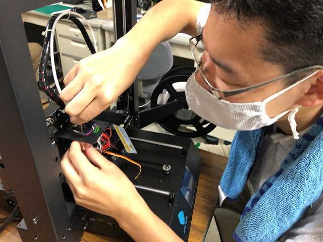
まずは取り外し |
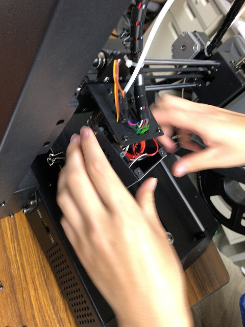
ヒーターヘッド近くの | ||
|
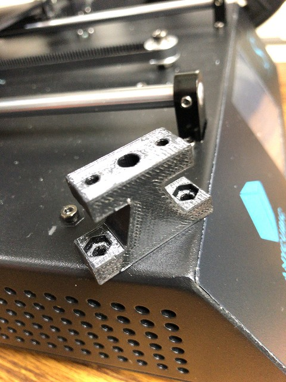
PLAのスペーサが歪んでました |
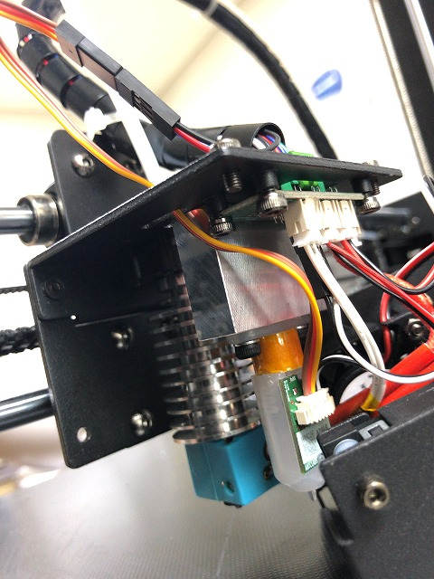
オレンジ色の部品の上にジュラで作ったスペーサに交換 | ||
|
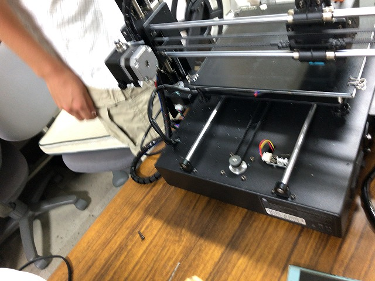
小さいスリットにネジが落ちたｗ |
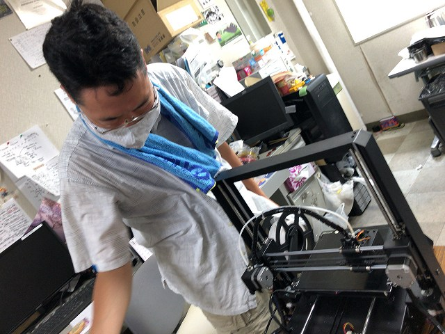
なんて無駄な奇跡 | ||
|
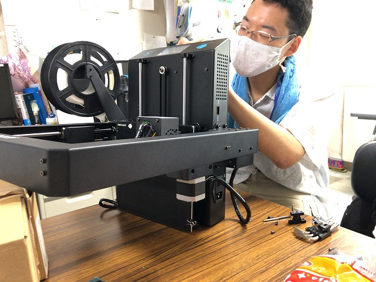
裏蓋外して |
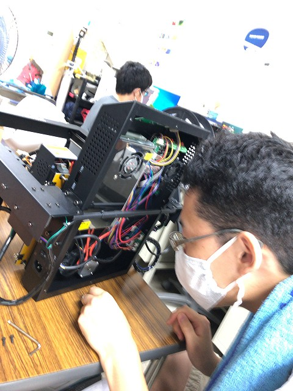
狭いところにはまってるし | ||
|
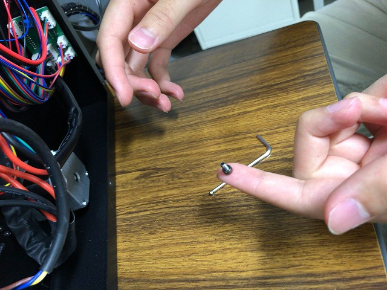
とれた |
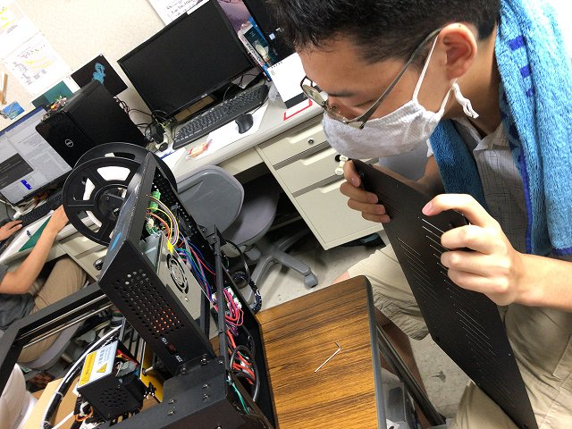
ヨシ | ||
|
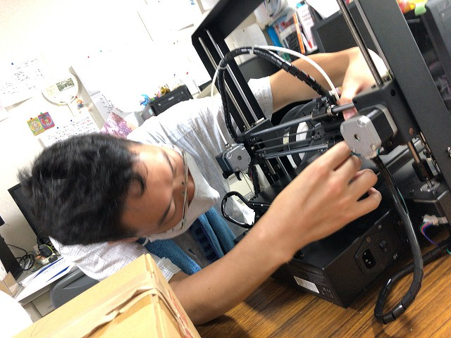
設置 |
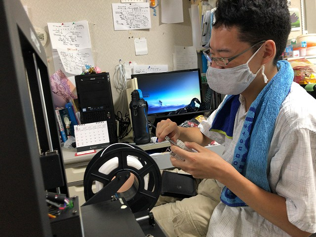
完了 | ||